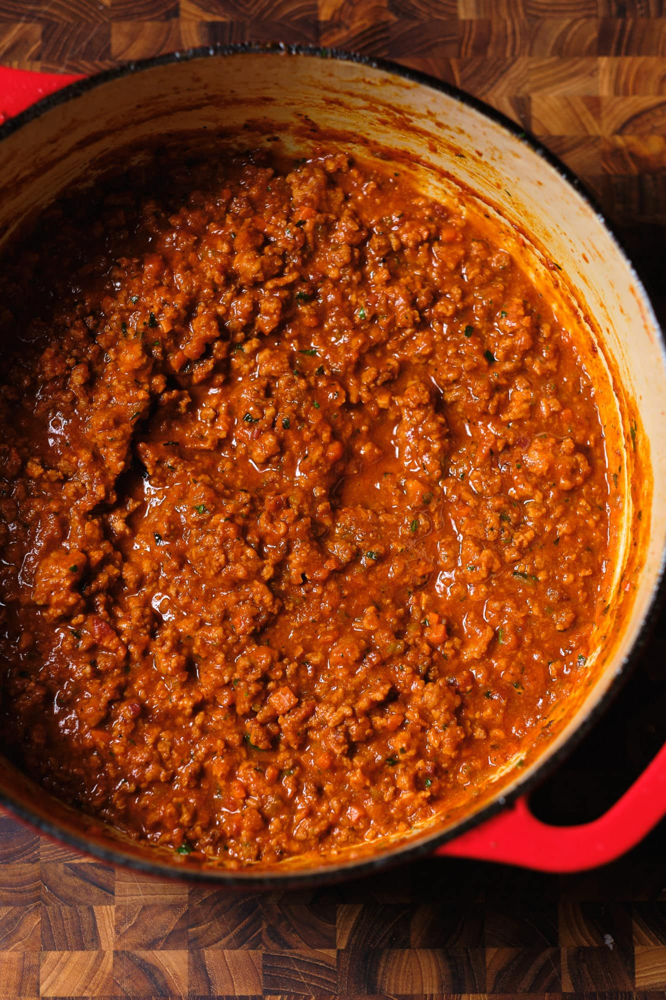

Bolognese

Descrption
My own take on a bolognese sauce.
Ingredients
- 2 Sticks of Celery
- 1 Onion
- 1 Carrot
- 4 Cloves of Garlic
- 500g Mince Beef
- 150g Bacon
- 2 Cans of Diced Tomatoes
- 20g Basil
- 1 Beef Stock Cube
- 2tbsp Tomato Puree
- 1-2 Chillies
- 1 Cup Red Wine
- 100g Butter
- 1/4 Cup Milk
- 1/4 Cup Parmesan
- 2tbsp Fish Sauce
- 1tsp MSG
- Salt to Taste
Steps
- Cut up bacon and render the fat slowly.
- Remove bacon bits but leave the fat in the pan.
- Add half of the butter.
- Add onion to the pan and cook until softened.
- Add minced garlic and chilli, sautee until fragrant.
- Add carrot and celery and sautee until softened.
- Keep tasting and adding salt as needed.
- Add tomato paste and caramelize.
- Add beef and cooked bacon.
- When the meat is browned, deglaze with red wine.
- Add broth and tomoatoes.
- Add fish sauce and MSG.
- Simmer for 1.5 hours.
- Taste and season as needed.
- Add milk and simmer for another 30 minutes.
- Add remaining butter, basil, and parmesan.
Other Recipes